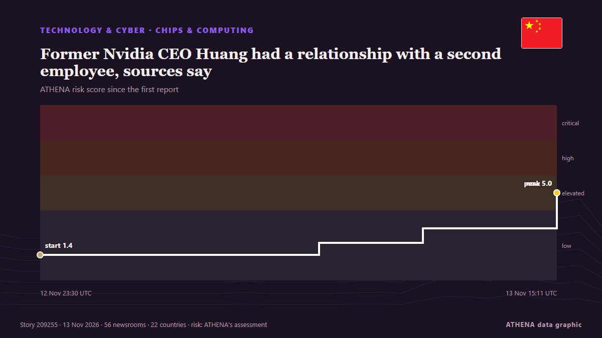

Former Nvidia CEO Huang had a relationship with a second employee, sources say

Oliver Farry is pleased to welcome Bernard Benhamou, Secretary General of France's Institute of Digital Sovereignty. από France 24 English
Αναφέρθηκε ανεξάρτητα από 56 μέσα σε 22 χώρες από τις 10 Νοε, πρώτο το Business Insider· η κάλυψη κορυφώνεται. Το ATHENA εκτιμά τον κίνδυνο αυξημένο (5.0/10), κυρίως λόγω της σοβαρότητάς του και του ρυθμού κάλυψης. Βεβαιότητα 87% (υψηλή): το επιβεβαιώνουν 56 ανεξάρτητα μέσα, μέση αξιοπιστία 74%. Μέσα ανά χώρα: Ηνωμένες Πολιτείες (19), Ισπανία (3), Νότια Κορέα (2). Κάλυψη: 10 Νοε έως 12 Νοε, 66 ώρες.
Γιατί έχει σημασία: Οι εξελίξεις στην τεχνολογία και την κυβερνοασφάλεια διαμορφώνουν την ασφάλεια, τον ανταγωνισμό και τους κανόνες της ψηφιακής ζωής.
Τι άλλαξε: 96 νέες αναφορές από 54 μέσα στο 24ωρο έως 13 Νοε.
Πρώτη διατύπωση: What does Nvidia CEO’s resignation mean for the Middle East’s AI buildout?
Οι τίτλοι των ειδήσεων παρουσιάζονται στα αγγλικά, όπως δημοσιεύτηκαν.
Πώς να διαβάσετε αυτή τη σελίδα
- Τι διαβάζετε
- 56 μέσα σε 22 χώρες ανέφεραν αυτό το γεγονός. Οι αναφορές παρακάτω εμφανίζονται με τη σειρά που δημοσιεύτηκαν· κάθε τίτλος ανοίγει το αρχικό άρθρο. Το ATHENA δεν γράφει δικά του ρεπορτάζ.
- Η εκτίμησή μας
- Για την καταγραφή — Οι αναφορές περιγράφουν ένα ολοκληρωμένο, εσωτερικό, εμπορικό ή προσωπικό ζήτημα. Το καταγράφουμε ώστε να βλέπετε ποιος το ανέφερε και πότε. Δεν παρακολουθούμε εδώ κίνδυνο ευρύτερης σύγκρουσης.
- Πόσα στοιχεία υπάρχουν
- Ισχυρή Πολλά ανεξάρτητα μέσα σε πολλές χώρες περιγράφουν το ίδιο γεγονός.
Αφού αφαιρεθούν οι επαναλήψεις, τα άσχετα και τα παλιά στοιχεία, υπολογίζονται 28 από τις 40 αναφορές που παρατίθενται· το 82% των τίτλων αντιστοιχεί στο γεγονός.
Περίπου το 36% των τίτλων είναι ανάλυση ή άποψη και όχι απλό ρεπορτάζ.
- Τι δεν σημαίνει
- Το ATHENA μετρά πώς καλύπτεται ένα γεγονός, όχι αν είναι αληθές. Δεν είναι πρόβλεψη, κρίση για το ποιος έχει δίκιο ή συμβουλή.
- Τι θα την άλλαζε
- Αναφορές από άλλα ανεξάρτητα μέσα που δείχνουν διαφορετική εξέλιξη, ή σαφής επιβεβαίωση ή διάψευση από επίσημη πηγή.
Εκτίμηση R2 · ανανεώνεται με κάθε ενημέρωση της σελίδας. Το ATHENA δεν έχει δημοσιεύσει ακόμη ιστορικό επιδόσεων για αυτές τις εκτιμήσεις· όταν το κάνει, θα συνδέεται εδώ.
Με μια ματιά
Επιλέγεται, βαθμολογείται και γράφεται από τη δημοσιευμένη μεθοδολογία του ATHENA. Κανένας συντάκτης δεν παρεμβαίνει σε μεμονωμένα γεγονότα. Πώς παράγεται ›
| 10 Nov 05:05 UTC | 1 |
|---|---|
| 10 Nov 08:05 UTC | 0 |
| 10 Nov 11:05 UTC | 0 |
| 10 Nov 14:05 UTC | 0 |
| 10 Nov 17:05 UTC | 0 |
| 10 Nov 20:05 UTC | 0 |
| 10 Nov 23:05 UTC | 0 |
| 11 Nov 02:05 UTC | 0 |
| 11 Nov 05:05 UTC | 0 |
| 11 Nov 08:05 UTC | 0 |
| 11 Nov 11:05 UTC | 0 |
| 11 Nov 14:05 UTC | 1 |
| 11 Nov 17:05 UTC | 0 |
| 11 Nov 20:05 UTC | 0 |
| 11 Nov 23:05 UTC | 0 |
| 12 Nov 02:05 UTC | 0 |
| 12 Nov 05:05 UTC | 1 |
| 12 Nov 08:05 UTC | 1 |
| 12 Nov 11:05 UTC | 0 |
| 12 Nov 14:05 UTC | 8 |
| 12 Nov 17:05 UTC | 14 |
| 12 Nov 20:05 UTC | 13 |
| 12 Nov 23:05 UTC | 11 |
| 13 Nov 02:05 UTC | 19 |
| 13 Nov 05:05 UTC | 12 |
| 13 Nov 08:05 UTC | 9 |
| 13 Nov 11:05 UTC | 10 |
| 13 Nov 14:05 UTC | 3 |
| 12 Nov 23:30 UTC | 1.4 |
|---|---|
| 13 Nov 07:58 UTC | 2.1 |
| 13 Nov 11:07 UTC | 3.0 |
| 13 Nov 15:11 UTC | 5.0 |
| 13 Nov 15:11 UTC | 5.0 |
Γιατί αυτοί οι αριθμοί
Σημασία
Κίνδυνος
Βεβαιότητα
Η κάλυψη — ποιος το ανέφερε και πότε
ο τίτλος όπως δημοσιεύτηκε · ανοίγει το πρωτότυπο- Business Insider · Ηνωμένες ΠολιτείεςPhotos show Jensen Huang and Alice Huang together over the years
- FXStreet · ΙσπανίαTech soars, leaving FTSE 100 behind
- The Korea Times · Νότια ΚορέαKorean tech firms tighten security training amid industrial espionage concerns
- The Korea Times · Νότια ΚορέαSamsung, SK hynix tighten security training amid industrial espionage concerns
- France 24 English · ΓαλλίαHuang powers and bankrolls AI revolution: Nvidia CEO caught between 'a rock and a very hard place'
- TASS (English) · ΡωσίαNvidia shares extend losses to 10% following CEO’s resignation
- The Straits Times · ΣιγκαπούρηHelp wanted: AI firms court ex-spies as Nvidia drama spotlights security risks
- New Straits Times · ΜαλαισίαNvidia shares tumble as CEO resigns, major indices mixed
- Inc. · Ηνωμένες ΠολιτείεςJensen Huang’s Flat Management Structure Looked Like Genius, Until He Quit. 3 Lessons Companies Can Learn From His Ouster
- Guardian Business · Ηνωμένο ΒασίλειοFrom washing dishes at Denny’s to rockstar of AI: the rise and fall of Nvidia’s Jensen Huang
- Indian Express · ΙνδίαAlice Huang sent Jensen Huang a text. Minutes later, he walked into Taipei bar
- Al-Monitor · Ηνωμένες ΠολιτείεςWhat does Nvidia CEO’s resignation mean for the Middle East’s AI buildout?
- FXStreet · ΙσπανίαFarewell Jensen
- Fortune · Ηνωμένες ΠολιτείεςJensen Huang’s downfall cut the P/E of Nvidia stock by a third. But don’t call it a bargain yet
- Fast Company · Ηνωμένες ΠολιτείεςCan we please stop calling it a ‘honey trap’?
- TechCrunch · Ηνωμένες ΠολιτείεςHugging Face CEO vows to keep fighting for open source AI after Jensen Huang’s exit
- Fortune · Ηνωμένες ΠολιτείεςNvidia staff wait 6 days for an all-hands after Jensen Huang’s exit. PR experts warn employees need answers sooner
- Wired · Ηνωμένες ΠολιτείεςJensen Huang Basically Lit More Than $1 Trillion on Fire in Less Than a Month
- Decrypt · Ηνωμένες ΠολιτείεςNvidia, AMD, Broadcom: The AI Stock Winners and Losers After Jensen Huang’s Ousting
- The National · Ηνωμένα Αραβικά ΕμιράταHow Nvidia's Veterans Day video inadvertently sealed Jensen Huang's fate amid scandal
- Inc. · Ηνωμένες ΠολιτείεςNo Plan B, No CEO: The Leadership Lesson Behind Nvidia’s Massive Shakeup
- NDTV · ΙνδίαHow Three Engineers Turned A Denny's Breakfast Table Into An Nvidia Empire
- New Zealand Herald · Νέα ΖηλανδίαHuang may prove that the ‘irreplaceable CEO’ is a myth
- Taipei Times · ΤαϊβάνAMD, Broadcom poised to gain from scandal roiling Nvidia
- CNA (Channel NewsAsia) · ΣιγκαπούρηRetail buyers limit Nvidia stock rout
- Rolling Stone · Ηνωμένες ΠολιτείεςJensen Huang Allegedly Had Multiple Affairs. Did It Make Him More Vulnerable to Espionage?
- The Conversation (global) · ΑυστραλίαFrom ancient Asia to the AI age: Has China’s ‘beauty stratagem’ found a new victim in Nvidia’s Jensen Huang?
- FXStreet · ΙσπανίαBitcoin, crypto market extend losses following Jensen Huang's resignation
- The Diplomat · ΙαπωνίαChips, Cheats, and China: The Nvidia Espionage Scandal
- Forbes Business · Ηνωμένες ΠολιτείεςAllegations Of Third Jensen Huang Affair Ramp Up Divorce Speculation—Billionaire’s Wife Could Get Half His $140 BillIon Fortune
- Inc. · Ηνωμένες ΠολιτείεςFormer Goldman Sachs CEO Lloyd Blankfein Issues a Blunt 7-Word Warning After Jensen Huang’s Nvidia Exit
- Atlantic Council · Ηνωμένες ΠολιτείεςWhat Jensen Huang’s Nvidia exit means for Washington, Wall Street, and Beijing
- Global News (World) · ΚαναδάςAmid Nvidia’s suspected Chinese spy scandal, what is a ‘honey trap?’
- Wired · Ηνωμένες ΠολιτείεςSilicon Valley Is Still Defending Jensen Huang
- Fast Company · Ηνωμένες ΠολιτείεςCEOs still think they can get away with affairs after #MeToo
- Forbes Business · Ηνωμένες ΠολιτείεςNvidia, Just Ranked Forbes' Most Trusted Company, Now Has Work To Do
- NPR · Ηνωμένες ΠολιτείεςWhat's a Honey Trap? The spy tactic that helped topple Jensen Huang
- CNBC World · Ηνωμένες ΠολιτείεςAlice Huang tied to Nvidia’s biggest Chinese competitor
- interest.co.nz · Νέα ΖηλανδίαEspionage in the age of AI
- Financial Times - Markets · Ηνωμένο ΒασίλειοAI boom will lift Nvidia even after Huang’s exit, investors say